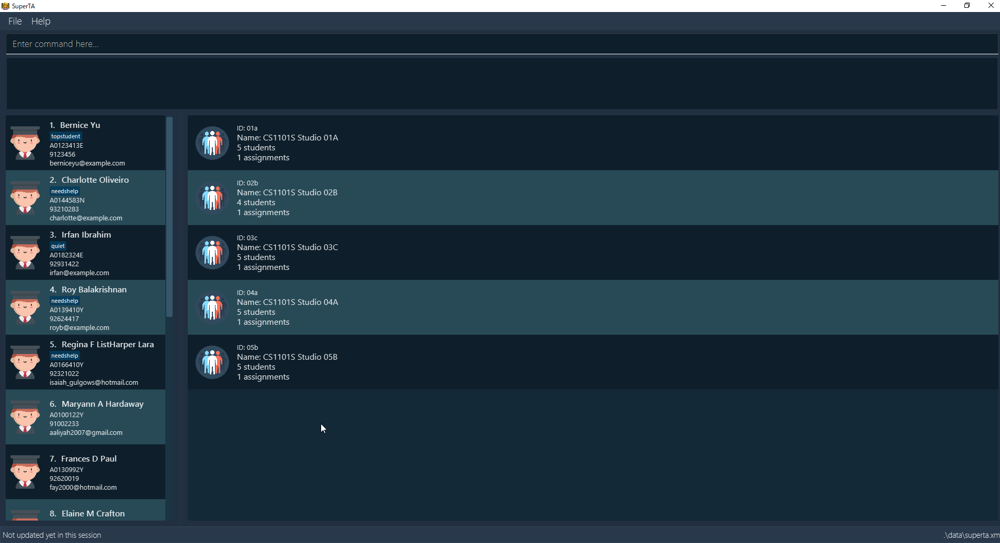

By: CS2103T T16-2 Since: September 2018 Licence: MIT
- 1. Introduction
- 2. Quick Start
- 3. Features
- 3.1. Viewing help :
help - 3.2. Adding a student:
add - 3.3. Listing all students :
list - 3.4. Listing all tutorial groups:
list-tutorial-groups - 3.5. Editing a student :
edit - 3.6. Locating students by keywords:
find - 3.7. Deleting a student :
delete - 3.8. Selecting a student :
select - 3.9. Viewing a student’s information:
view - 3.10. Creating a Tutorial Group:
create-tutorial-group - 3.11. Updating a Tutorial Group:
update-tutorial-group - 3.12. Deleting a Tutorial Group:
delete-tutorial-group - 3.13. View Tutorial Group:
view-tutorial-group - 3.14. Add to Tutorial Group:
add-to-tutorial-group - 3.15. Remove from Tutorial Group:
remove-from-tutorial-group - 3.16. Create Attendance:
create-attendance - 3.17. Mark Attendance:
mark-attendance - 3.18. View Attendance Session:
view-session - 3.19. Creating an Assignment:
create-assignment - 3.20. Update an Assignment:
update-assignment - 3.21. Deleting an Assignment:
delete-assignment - 3.22. Grade Assignment for Student:
grade - 3.23. View Assignment Details:
view-assignment - 3.24. Feedback to Student:
feedback - 3.25. Listing entered commands :
history - 3.26. Undoing previous command :
undo - 3.27. Redoing the previously undone command :
redo - 3.28. Clearing all entries :
clear - 3.29. Exiting the program :
exit - 3.30. Filter by Tutorial Group:
filter - 3.31. Sort by assignment grade:
sort - 3.32. View detailed performance data of student:
view-performance - 3.33. Saving the data
- 3.1. Viewing help :
- 4. FAQ
- 5. Command Summary
1. Introduction
SuperTA is a desktop app for Teaching Assistants and Professors of NUS School of Computing to manage their tutorials and students. It is optimized for those who prefer to work with a Command Line Interface (CLI) while still having the benefits of a Graphical User Interface (GUI). Jump to Section 2, “Quick Start” section to get started. Enjoy!
2. Quick Start
-
Ensure you have Java version
9or later installed in your Computer. -
Download the latest
superTA.jarhere. -
Copy the file to the folder you want to use as the home folder for your SuperTA client.
-
Double-click the file to start the app. The GUI should appear in a few seconds.
 -
Type the command in the command box and press Enter to execute it.
e.g. typinghelpand pressing Enter will open the help window. -
Some example commands you can try:
-
list: lists all students in the directory -
add n/John Doe p/98765432 e/johnd@example.com id/A0123456Y: adds a student namedJohn Doeto the student directory. -
create-tutorial-group id/1a n/My First Tutorial Group: Creates a tutorial group namedMy First Tutorial Groupwith the ID1a -
delete 3: shows the 3rd student in the current list that was deleted -
exit: exits the app
-
-
Refer to Section 3, “Features” for details of each command.
3. Features
Command Format
-
Words in
UPPER_CASEare the parameters to be supplied by the user e.g. inadd n/NAME,NAMEis a parameter which can be used asadd n/John Doe. -
Items in square brackets are optional e.g
n/NAME [t/TAG]can be used asn/John Doe t/friendor asn/John Doe. -
Items with
… after them can be used multiple times including zero times e.g.[t/TAG]…can be used ast/friend,t/friend t/familyetc. -
Parameters can be in any order e.g. if the command specifies
n/NAME p/PHONE_NUMBER,p/PHONE_NUMBER n/NAMEis also acceptable.
3.1. Viewing help : help
Format: help
3.2. Adding a student: add
Adds a student to the directory
Format: add n/NAME p/PHONE_NUMBER e/EMAIL id/STUDENT-ID [t/TAG]…
|
A student can have any number of tags (including 0) |
Examples:
-
add n/John Doe p/98765432 e/johnd@example.com id/A0123456Y -
add n/Betsy Crowe t/friend e/betsycrowe@example.com p/1234567 id/A1234567T tag/needs-help
3.3. Listing all students : list
Shows a list of all students in the directory.
Format: list
3.4. Listing all tutorial groups: list-tutorial-groups
Shows a list of all the tutorial groups, and reflects it on the UI.
Format: list-tutorial-groups
3.5. Editing a student : edit
Edits an existing student in the directory.
Format: edit INDEX [n/NAME] [p/PHONE] [e/EMAIL] [id/STUDENT-ID] [t/TAG]…
Examples:
-
edit 1 p/91234567 e/johndoe@example.com
Edits the phone number and email address of the 1st student to be91234567andjohndoe@example.comrespectively. -
edit 2 n/Betsy Crower t/
Edits the name of the 2nd student to beBetsy Crowerand clears all existing tags.
3.6. Locating students by keywords: find
Finds and lists all students in the SuperTA client whose information matched with the entered keywords.
Format: find [n/NAME] [p/PHONE] [e/EMAIL] [id/STUDENT-ID]
Examples:
-
find n/John
ReturnsjohnandJohn Doe -
find p/91234567
Returns student with phone number91234567 -
find e/Johndoe@hotmail.com
Returns student with emailJohndoe@hotmail.com -
find n/John id/A0123456T
ReturnsjohnandJohn Doeand student with student idA0123456T -
find n/Alice n/Hans
ReturnsHansonly
3.7. Deleting a student : delete
Deletes the specified student from the directory.
Format: delete INDEX
Examples:
-
list
delete 2
Deletes the 2nd student in the directory. -
find Betsy
delete 1
Deletes the 1st student in the results of thefindcommand.
3.8. Selecting a student : select
Selects the student identified by the index number used in the displayed student list.
Format: select INDEX
Examples:
-
list
select 2
Selects the 2nd student in the list. -
find Betsy
select 1
Selects the 1st student in the results of thefindcommand.
3.9. Viewing a student’s information: view
Views a student’s information and any feedback that is left for him.
Format: view id/STUDENT-ID
Examples:
-
view id/A0166733Y
Views the information of the student with the ID A0166733Y.
3.10. Creating a Tutorial Group: create-tutorial-group
Creates a tutorial group with specified name and ID.
Format: create-tutorial-group n/TUTORIAL-GROUP-NAME id/TUTORIAL-GROUP-ID
Examples:
-
create-tutorial-group n/CS1101S Studio 04A id/04a
Creates a tutorial group namedCS1101S Studio 04Awith the identifier04a. -
create-tutorial-group n/CS2103T id/04b
create-tutorial-group n/CS2103T id/04b
Creates a tutorial group named CS2103T with the identifier 04b and a second tutorial group with the same name and identifier04b-dusty123.
3.11. Updating a Tutorial Group: update-tutorial-group
Updates a tutorial group’s name.
Format: update-tutorial-group id/TUTORIAL-GROUP-ID n/TUTORIAL-GROUP-NAME
Examples:
-
update-tutorial-group id/04a n/CS2103T Tutorial Group 9
Updates the tutorial group with the ID04ato have an updated name ofCS2103T Tutorial Group 9.
3.12. Deleting a Tutorial Group: delete-tutorial-group
Deletes an existing tutorial group.
Format: delete-tutorial-group id/TUTORIAL-GROUP-ID
Examples:
-
delete-tutorial-group id/04a
Deletes a tutorial group with the ID04a.
3.13. View Tutorial Group: view-tutorial-group
Views a tutorial group’s details.
Format: view-tutorial-group id/TUTORIAL-GROUP-ID
Examples:
-
view-tutorial-group id/04a
Displays the04atutorial group’s information .
3.14. Add to Tutorial Group: add-to-tutorial-group
Adds a student to a tutorial group.
Format: add-to-tutorial-group tg/TUTORIAL-GROUP-ID st/STUDENT-ID
Examples:
-
add-to-tutorial-group tg/04a st/A1231231Y
Adds the student with student IDA1231231Yto the tutorial group with an ID of04a.
3.15. Remove from Tutorial Group: remove-from-tutorial-group
Removes a student from a tutorial group.
Format: remove-from-tutorial-group tg/TUTORIAL-GROUP-ID st/STUDENT-ID
Examples:
-
remove-from-tutorial-group tg/1 st/A1231231Y
Removes the student with student IDA1231231Yfrom the tutorial group with an ID of1.
3.16. Create Attendance: create-attendance
Creates an attendance listing for a specific tutorial group, identified by its ID.
Format: create-attendance tg/TUTORIAL-GROUP-ID n/SESSION-NAME
Examples:
-
create-attendance tg/1 n/W4 Tutorial
Creates an attendance namedW4 Tutorialfor the tutorial group with an ID of1.
3.17. Mark Attendance: mark-attendance
Marks attendance for students from a specific tutorial group and session name, identified by its ID and name.
Format: mark-attendance tg/TUTORIAL-GROUP-ID n/SESSION-NAME st/STUDENT-ID …
Examples:
-
mark-attendance tg/1 n/W4 Tutorial st/A1234567T st/A0123456Y
Marks students with IDsA1234567TandA0123456Yas present in tutorial session namedW4 Tutorialfor the tutorial group with an ID of1.
3.18. View Attendance Session: view-session
Views the session details for a particular session in a tutorial group.
Format: view-attendance tg/TUTORIAL-GROUP-ID n/SESSION-NAME
Examples:
-
view-attendance tg/04a n/W1Tutorial
Views the details of the sessionW1Tutorialbelonging to the tutorial group04a.
3.19. Creating an Assignment: create-assignment
Creates an assignment for a specific tutorial group.
Format: create-assignment tg/TUTORIAL-GROUP-ID n/ASSIGNMENT-TITLE m/MAXMARKS
Examples:
-
create-assignment tg/04a n/lab1 m/40
Creates an assignment namedlab1for the tutorial group with an ID of04a, with the maximum marks for this assignment as40.
3.20. Update an Assignment: update-assignment
Updates an existing assignment’s details such as title and maximum marks.
Format: update-assignment tg/TUTORIAL-GROUP-ID as/OLD-ASSIGNMENT-TITLE m/OLD-ASSIGNMENT-MAX-MARKS
[new_as/NEW-ASSIGNMENT-TITLE] [new_m/NEW-ASSIGNMENT-MAX-MARKS]
Examples:
-
update-assignment tg/04a as/lab1 m/40.0 new_as/lab2
Updates an assignment namedlab1tolab2for the tutorial group with an ID of04a. -
update-assignment tg/04a as/lab1 m/40.0 new_m/50
Updateslab1assignment maximum marks from40.0to50.0marks for the tutorial group with an ID of04a. -
update-assignment tg/04a as/lab1 m/40.0 new_as/lab2 new_m/50
Updates an assignment namedlab1and maximum marks of40.0, to assignment namedlab2and maximum marks of50.0for the tutorial group with an ID of04a.
3.21. Deleting an Assignment: delete-assignment
Deletes an existing assignment for a specific tutorial group.
Format: delete-assignment tg/TUTORIAL-GROUP-ID as/ASSIGNMENT-TITLE
Examples:
-
delete-assignment tg/04a as/lab1
Deletes an assignment named 'lab1' from the tutorial group with an ID of '04a'.
3.22. Grade Assignment for Student: grade
Enters a grade for a student for a specific assignment in a tutorial group.
Format: grade tg/TUTORIAL-GROUP-ID as/ASSIGNMENT-TITLE st/STUDENT-ID m/MARKS
Examples:
-
grade tg/04a as/lab1 st/A0166733Y m/40
Creates a grade with marks40for the student with an ID ofA0166733Yin the tutorial group04afor the assignment with titlelab1.
3.23. View Assignment Details: view-assignment
Views an assignment details.
Format: view-assignment tg/TUTORIAL-GROUP-ID as/ASSIGNMENT-TITLE
Examples:
-
view-assignment tg/04a as/lab1
Views the assignment details for thelab1assignment in the04atutorial group.
3.24. Feedback to Student: feedback
Adds feedback to a student with a specified Student ID.
Format: feedback id/STUDENT-ID f/FEEDBACK
Examples:
-
feedback id/A1234566T f/Is generally attentive during class. However, needs to speak up more.
Adds the given feedbackIs generally attentive during class. However, needs to speak up more.to the student with Student IDA1234566T.
3.25. Listing entered commands : history
Lists all the commands that you have entered in reverse chronological order.
Format: history
|
Pressing the ↑ and ↓ arrows will display the previous and next input respectively in the command box. |
3.26. Undoing previous command : undo
Restores the client to the state before the previous undoable command was executed.
Format: undo
|
Undoable commands: those commands that modify the client’s content. |
Examples:
-
delete 1
list
undo(reverses thedelete 1command) -
select 1
list
undo
Theundocommand fails as there are no undoable commands executed previously. -
delete 1
clear
undo(reverses theclearcommand)
undo(reverses thedelete 1command)
3.27. Redoing the previously undone command : redo
Reverses the most recent undo command.
Format: redo
Examples:
-
delete 1
undo(reverses thedelete 1command)
redo(reapplies thedelete 1command) -
delete 1
redo
Theredocommand fails as there are noundocommands executed previously. -
delete 1
clear
undo(reverses theclearcommand)
undo(reverses thedelete 1command)
redo(reapplies thedelete 1command)
redo(reapplies theclearcommand)
3.28. Clearing all entries : clear
Clears all data from the client. This includes all students, tutorial groups, assignments, etc.
Format: clear
3.29. Exiting the program : exit
Exits the program.
Format: exit
3.30. Filter by Tutorial Group: filter
|
Coming in 2.0 |
Filters students by a specific tutorial group ID.
Format: filter tg/TUTORIAL_GROUP_ID
Examples:
-
filter tg/1
Shows a list of all the students in the tutorial group with an ID of1.
3.31. Sort by assignment grade: sort
|
Coming in v2.0 |
Sorts students in order of their grade for a particular assignment.
Format: sort tg/TUTORIAL-GROUP-ID as/ASSIGNMENT-TITLE
Examples:
-
sort tg/1 as/1Displays a list of students in tutorial group1by their grade on assignment1.
3.32. View detailed performance data of student: view-performance
|
Coming in v2.0 |
Displays detailed information about a student across all tutorial groups, including his performance over time.
3.33. Saving the data
The SuperTA clients' data are saved in the hard disk automatically after any command that changes the data.
There is no need to save manually.
4. FAQ
Q: How do I transfer my data to another Computer?
A: Install the app in the other computer and overwrite the empty data file it creates with the file that contains the data of your previous Address Book folder.
5. Command Summary
-
Help :
help -
Add
add n/NAME p/PHONE_NUMBER e/EMAIL id/STUDENT-ID [t/TAG]…
e.g.add n/James Ho p/22224444 e/jamesho@example.com id/A0123456Y t/needs-help t/on-loa -
List :
list -
List Tutorial Groups :
list-tutorial-groups -
Edit :
edit INDEX [n/NAME] [p/PHONE_NUMBER] [e/EMAIL] [id/STUDENT-ID] [t/TAG]…
e.g.edit 2 n/James Lee e/jameslee@example.com -
Find :
find [n/NAME] [p/PHONE] [e/EMAIL] [id/STUDENT-ID]
e.g.find n/John,find id/A0166733Y n/John -
Delete :
delete INDEX
e.g.delete 3 -
Select :
select INDEX
e.g.select 2 -
View Feedback:
view id/STUDENT-ID
e.g.view id/A0166733Y -
Create Tutorial Group:
create-tutorial-group n/TUTORIAL-GROUP-NAME id/TUTORIAL-GROUP-ID
e.g.create-tutorial-group n/CS1101S Studio 04A id/04a -
Update Tutorial Group:
update-tutorial-group id/TUTORIAL-GROUP-ID n/TUTORIAL-GROUP-NAME
e.g.update-tutorial-group id/04a n/CS2103T Group 04A -
Delete Tutorial Group:
delete-tutorial-group id/TUTORIAL-GROUP-ID
e.g.delete-tutorial-group id/04a -
Add Student to Tutorial Group:
add-to-tutorial-group tg/TUTORIAL-GROUP-ID st/STUDENT-ID
e.g.add-to-tutorial-group tg/04a st/A0166733Y -
Remove Student from Tutorial Group:
remove-from-tutorial-group tg/TUTORIAL-GROUP-ID st/STUDENT-ID
e.g.remove-from-tutorial-group tg/04a st/A0166733Y -
Create Attendance:
create-attendance tg/TUTORIAL-GROUP-ID n/SESSION-NAME
e.g.create-attendance tg/1 n/W4 Tutorial -
Mark Attendance:
mark-attendance tg/TUTORIAL-GROUP-ID n/SESSION-NAME st/STUDENT-ID …
e.g.mark-attendance tg/1 n/W4 Tutorial st/A1234567T st/A0123456Y -
View Attendance:
view-session tg/TUTORIAL-GROUP-ID n/SESSION-NAME
e.g.view-session tg/1 n/W4 Tutorial -
Create Assignment:
create-assignment tg/TUTORIAL-GROUP-ID n/ASSIGNMENT-TITLE m/MAXMARKS
e.g.create-assignment tg/04a n/lab1 m/40 -
Update Assignment:
update-assignment tg/TUTORIAL-GROUP-ID as/OLD-ASSIGNMENT-TITLE m/OLD-ASSIGNMENT-MAX-MARKS [new_as/NEW-ASSIGNMENT-TITLE] [new_m/NEW-ASSIGNMENT-MAX-MARKS]
e.g.update-assignment tg/04a as/lab1 m/40.0 new_as/lab2 -
Delete Assignment:
delete-assignment tg/TUTORIAL-GROUP-ID as/ASSIGNMENT-TITLE
e.g.delete-assignment as/lab1 tg/04a -
Grade Assignment:
grade tg/TUTORIAL-GROUP-ID as/ASSIGNMENT-TITLE st/STUDENT-ID m/MARKS
e.g.grade tg/04a as/lab1 st/A0166733Y m/30 -
View Assignment Details:
view-assignment tg/TUTORIAL-GROUP-ID as/ASSIGNMENT-TITLE
e.g.view-assignment tg/04a as/lab1 -
Feedback:
feedback id/STUDENT-ID f/FEEDBACK
e.g.feedback id/A0166733Y f/Likes to sleep in class -
History :
history -
Undo :
undo -
Redo :
redo -
Clear :
clear